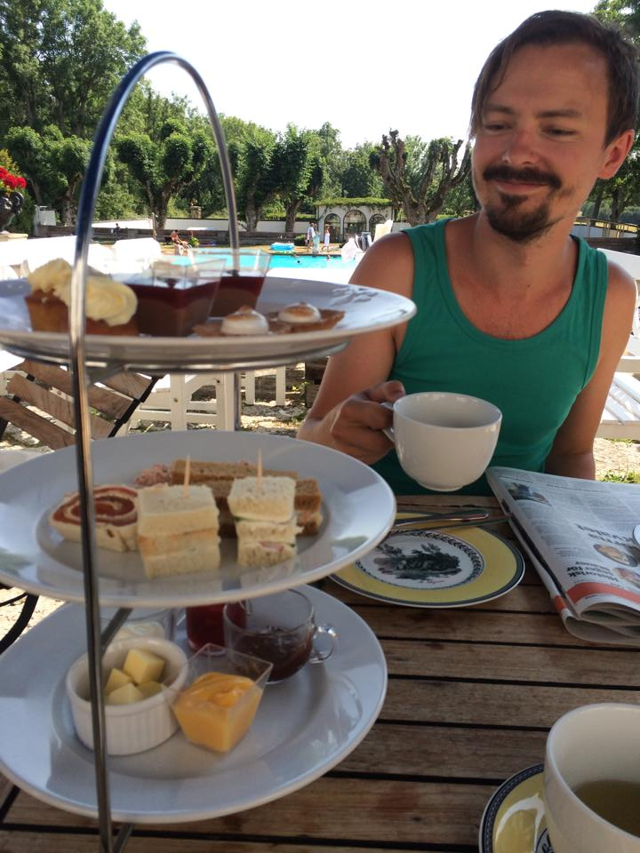

Om mig
Jag är 30 år gammal, heter Erik och jag bor i Stockholm med min fru och våra två hundar Cosmo och Jerker (även kända som ful och fulare eller Grisen och Apan). Tillsammans har vi ett landställe mitt ute i södra dalarnas urskog i närheten av där jag växte upp. Jag flyttade till Stockholm år 2001 när jag var 16 år för att studera musik vid Rytmus gymnasium. Efter studenten har jag jobbat med musik på halvtid, främst genom olika coverband men också egen musik, samtidigt som jag arbetat deltid på ett boende för människor med lindriga funktionsnedsättningar.
Efter drygt 10 år kände jag att det var dags för en ny utmaning. Jag tänkte att en utbildning inom datorvärlden skulle passa mig och hittade denna utbildning som verkade intressant. Jag har noll tidigare erfarenhet inom programmering så en ny utmaning blev det allt! Jag hoppas i framtiden kunna arbeta inom branschen i någon kapacitet. Vilken är jag inte helt klar över än.
Jag är envis, lugn och metodisk och en god lyssnare. Jag är dålig på att be om hjälp och tidvis kan jag snöa in på onödiga detaljer.
Intressen
- Bygga och snickra i stugan
- Hundar
- Sci-Fi böcker/serier/filmer (gärna lite halvdåliga)
- Enders game(boken!)
- Hyperion
- The Dresden Files
- Battlestar Galactica
- Musik
- Spela
- Skriva
- Lyssna
- Dataspel (glad amatör)
- Laga mat
- Indiskt
- Italienskt
- Slow food i Crockpot
- Grilla i mitt egensnickrade utekök på landet
- Titta på sport i alla möjliga former